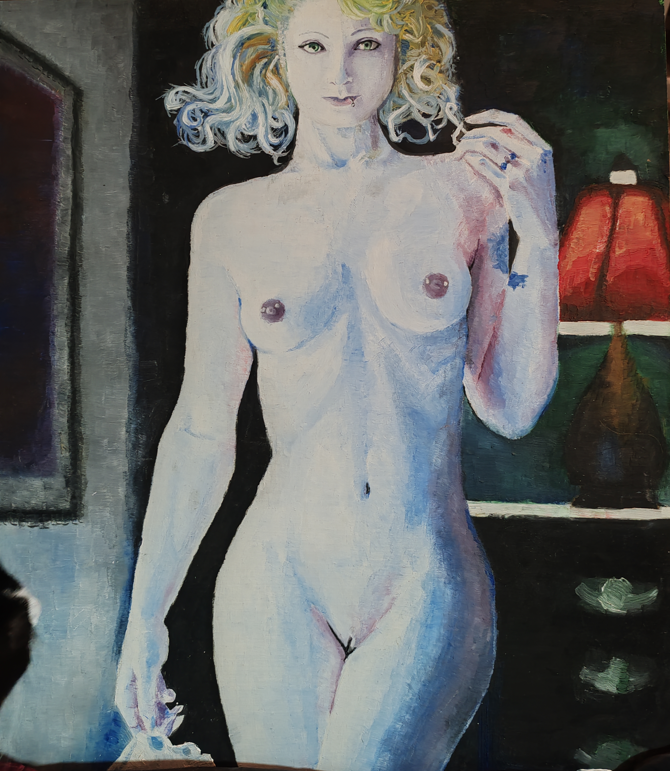

Reencuentro
Ricardo Vivanco
¿Qué ocurre cuando ves un viejo hábito y este te mira de frente?
Para mi el relato de alguien que ya no existe o que no volvio, o alguien que debe volver a subirse a la bicicleta y sentir el movimiento.
Veo esta pintura y ahora puedo notar sus fallas, donde me concentre en pintar, donde no, donde perdí las perspectivas de las partes y donde no.
Errores anatómicos: una clavícula fuera de lugar, hombros tanto mas grandes que la cadera, diferentes puntos de fuga desde el ombligo hacia arriba y hacia abajo.
Pero, de alguna forma, algunas partes las considero hermosas, donde puedo recordar perfectamente por que me enamore de la técnica.
Puedo ver los miles de trazos que me gritan que disfruté el proceso, doloroso inclusive.
Puedo ver donde me perdí solo pintando e incluso partes que me fascinaron posterior a terminarla.
Ver este hobby me recuerda por qué pintaba para mí y no para el resto.
Cuando pintaba para el resto se transformaba en una tarea.
Cuando pintaba para mi, era solo pintar.
Ricardo V.

Licencia: Creative Commons Attribution 4.0 (CC BY 4.0). Puedes reutilizar este texto con atribución (autor, fuente y licencia) e indicando cambios.